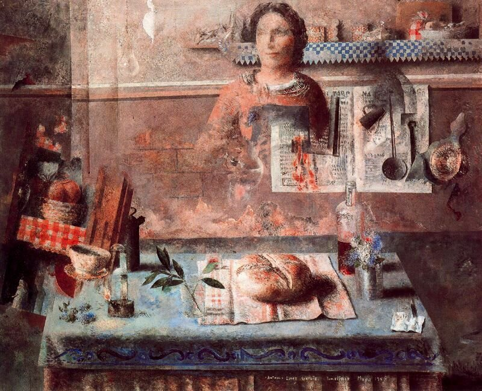
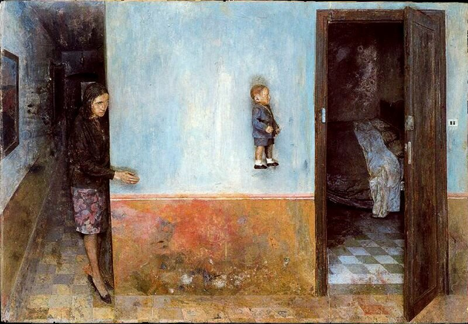

Люди искусства
Антонио Лопес

Антонио Лопес (11 февраля 1943 – 17 марта 1987) - пуэрториканский фэшн-иллюстратор,
чьи работы появлялись в таких изданиях, как Vogue, Harper's Bazaar, Elle,
Interview и New York Times.
Опубликовано несколько книг, в которых собраны его иллюстрации.
В своем некрологе New York Times назвала его "главным иллюстратором моды".
Обычно он подписывал свои работы "Антонио".
Книги
- Лопес, Антонио; Хемпхилл, Кристофер; Рамос, Хуан; Амиэль, Карен. "Девочки Антонио" ("Темза и Гудзон", 1982)
- Бертон, Ричард; Лопес, Антонио; Финамор, Рой. "Сказки Антонио из "Тысячи и одной ночи" (Стюарт, Табори и Чанг, 1985).
- Lopez, Antonio; Ramos, Juan Eugene. Антонио 60, 70, 80: три десятилетия стиля (Мюнхен: Schirmer/Mosel, 1995)
- Караникас, Пол; Лопес, Антонио. Люди Антонио ("Темза и Гудзон", 2004)
- Лопес, Антонио. Инстаматика (Santa Fe: Twin Palms Publishers, 2011)
- Padilha, Roger; Padilha, Mauricio. Антонио Лопес: мода, искусство, секс и диско (Риццоли, 2012)
Картины


Ссылка на статью в Wikipedia